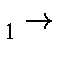

Next: Definition of some
Up: Choice of State
Previous: Polarizability
Franck-Condon considerations
This section was written based on discussions with
Victor I. Danilov
Department of Quantum Biophysics
Academy of Sciences of the Ukraine
Kiev 143
Ukraine
The Frank-Condon principle states that electronic transitions take place in
times that are very short compared to the time required for the nuclei to move
significantly. Because of this, care must be taken to ensure that the
calculations actually do reflect what is wanted.
Examples of various phenomena which can be studied are:
- Photoexcitation
- If the purpose of a calculation is to predict the energy of photoexcitation,
then the ground-state should first be optimized. Once this is done, then a
C.I. calculation can be carried out using 1SCF. With the appropriate
keywords (MECI C.I.=n etc.), the energy of photoexcitation to the
various states can be predicted.
A more expensive, but more rigorous, calculation would be to optimize the
geometry using all the C.I. keywords. This is unlikely to change the results
significantly, however.
- Fluorescence
- If the excited state has a sufficiently long lifetime, so that the geometry
can relax, then if the system returns to the ground state by emission of
a photon, the energy of the emitted photon will be less (it will be red-shifted) than
that of the exciting photon. To do such a calculation, proceed as follows:
- Optimize the ground-state geometry using all the keywords for the
later steps, but specify the ground state, e.g. MECI C.I.=3
GNORM=0.01 .
- Optimize the excited state, e.g. C.I.=3 ROOT=2 GNORM=0.01 MECI.
- Calculate the Franck-Condon excitation energy, using the results of the
ground-state calculation only.
- Calculate the Franck-Condon emission energy, using the results of the
excited state calculation only.
- If indirect emission energies are wanted, these can be obtained from
the
DHf
of the optimized excited and optimized ground-state calculations.
In order for fluorescence to occur, the photoemission probability must be quite
large, so only transitions of the same spin are allowed. For example, if the
ground state is S0, then the fluorescing state would be S1.
- Phosphorescence
- If the photoemission probability is very low, then the lifetime of the excited
state can be very long (sometimes minutes). Such states can become populated
by S
T1 intersystem crossing. Of course, the geometry of
the system will relax before the photoemission occurs.
- Indirect emission
- If the system relaxes from the excited electronic, ground vibrational state to
the ground electronic, ground vibrational state, then a more complicated
calculation is called for. The steps of such a calculation are:
- Optimize the geometry of the excited state.
- Using the same keywords, except that the ground state is specified,
optimize the geometry of the ground state.
- Take the difference in
DHf
of the optimized excited and optimized
ground-state calculations.
- Convert this difference into the appropriate units.
- Excimers
- An excimer is a pair of molecules, one of which is in an electronic excited
state. Such systems are usually stabilized relative to the isolated systems.
Optimization of the geometries of such systems is difficult. Suggestions on
how to improve this type of calculation would be appreciated.
Next: Definition of some
Up: Choice of State
Previous: Polarizability
J. J. P. Stewart
Fujitsu Ltd. 2001